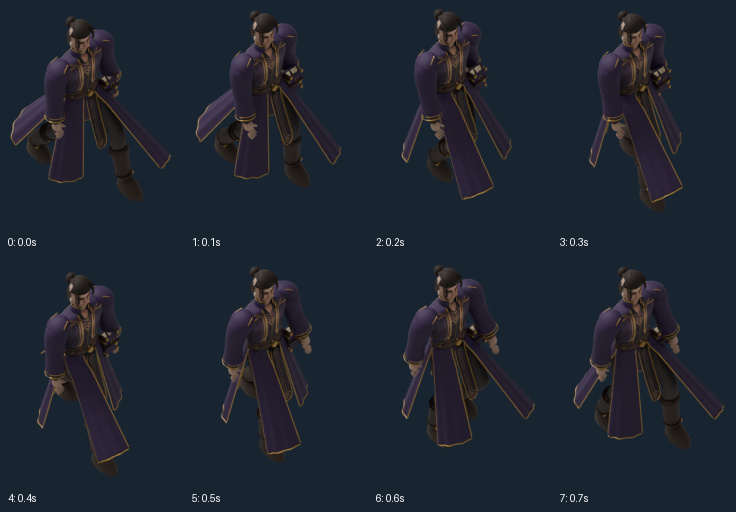
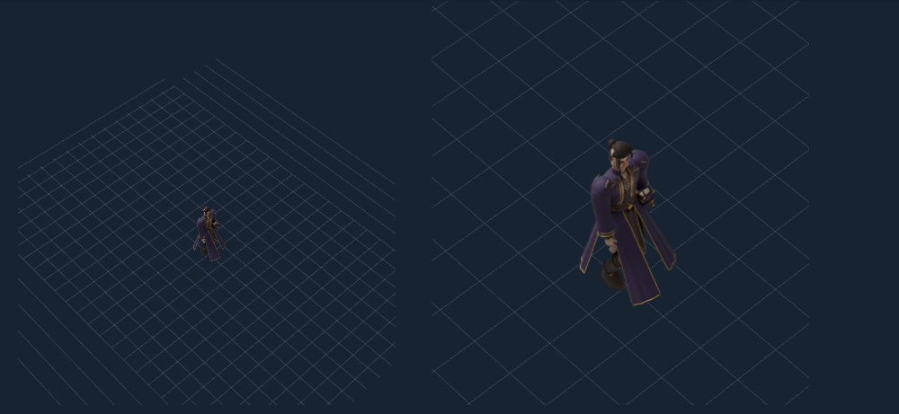
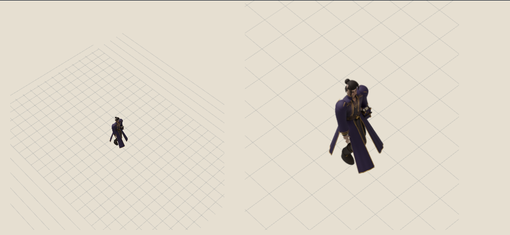
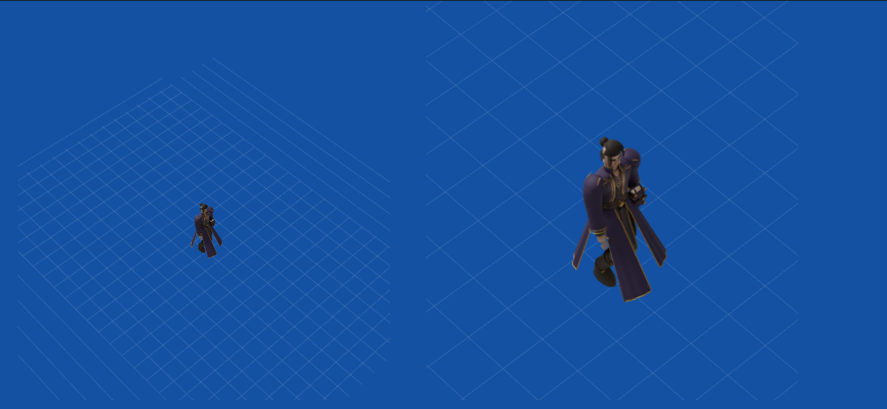

Godot shipping target · Pixi test harness · Blender source authoring · C projection.
Actual deformed soles hold within0.003mm, saved animation alternates leg leads, and the rigid book stays stable. This is the original project3D wizard, not the approved painted mage. Long robe panels conceal the support boots in several phases; painted style and visible gait remain unqualified.
Fresh150px vertical-body reference rendering, not an enlarged50px image. Real RGBA. The first-frame repeat is pixel-identical although PNG bytes differ.




Report · Evaluated mesh measurements · Saved-action checks · Neutral frame manifest